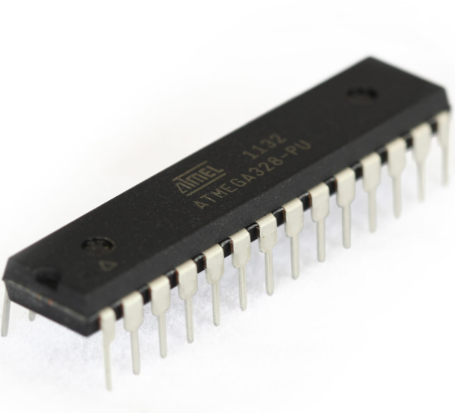
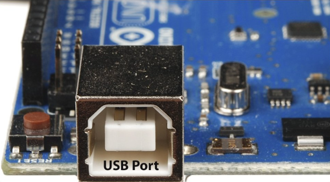
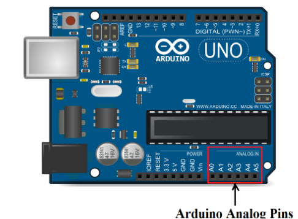
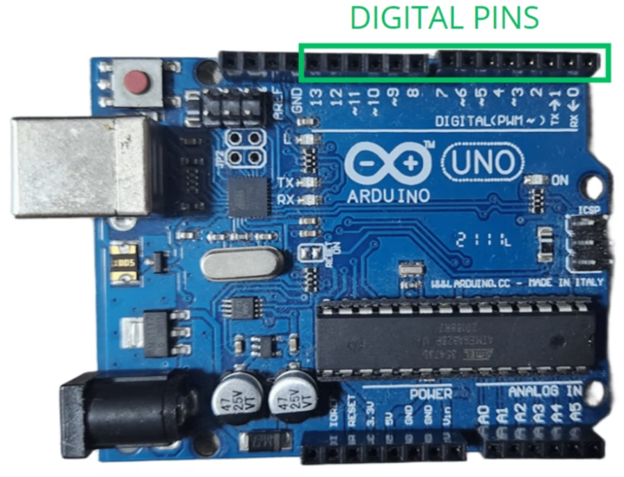
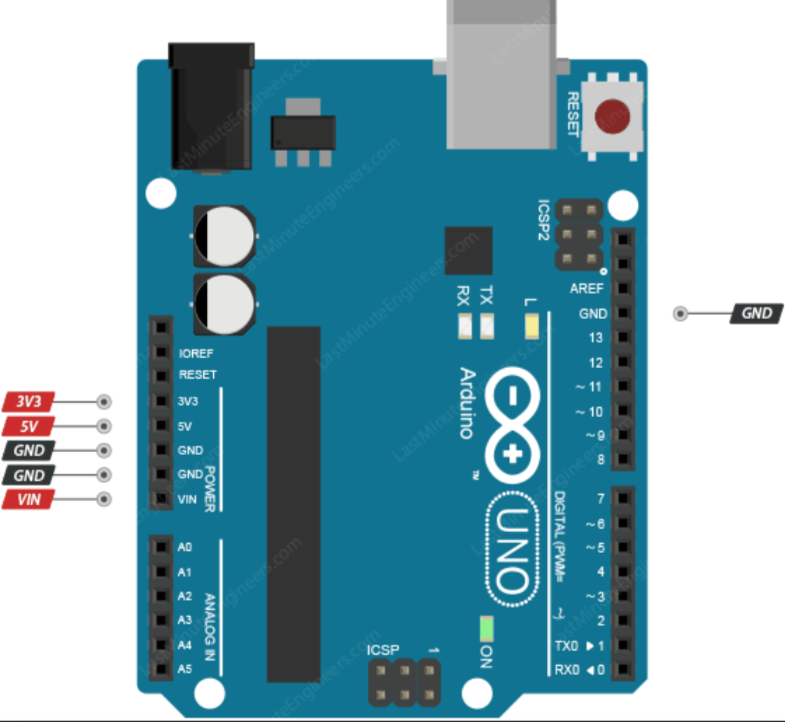
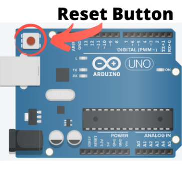
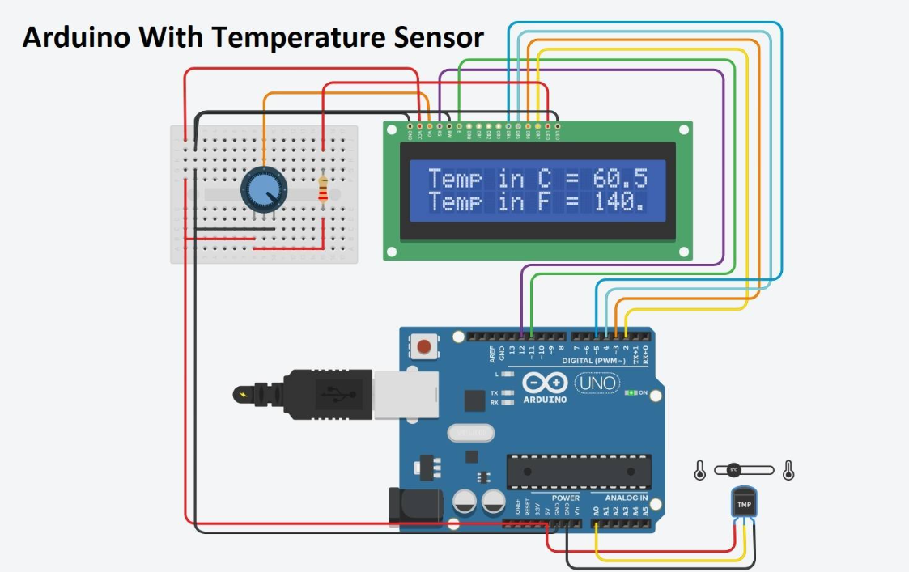
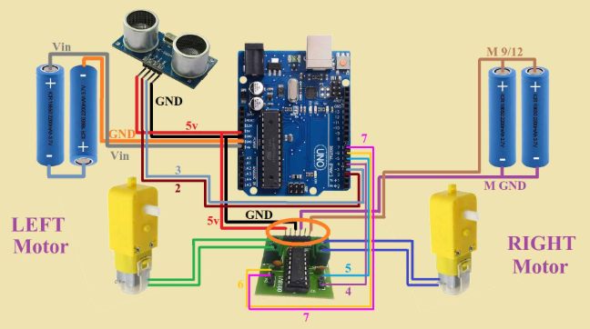
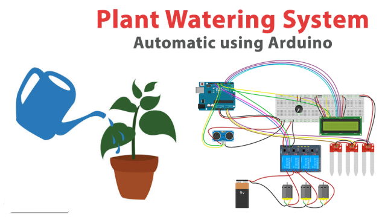

What is Arduino?
Arduino is an open-source electronics platform used to build smart electronic projects. It consists of a programmable microcontroller board and software used to write and upload code. Beginners use Arduino to create automation systems, robots, sensors, and interactive devices.
Uses of Arduino

- Home automation systems
- Robotics projects
- Sound and light detection systems
- Smart irrigation systems
- Security alarms
- IoT (Internet of Things) devices
Main Parts of Arduino
-
🧠 What is ATmega328P(Microcontroller) ?
- It is a microcontroller IC used to read inputs (buttons, sensors, sound, light, etc.), process data using a program, and control outputs (LEDs, motors, displays).
- 👉 Think of it as the brain of many beginner electronics projects. It is most famous because it powers boards like the Arduino Uno. 
-
🧠 What is the USB Port (Arduino)?
- It is a communication and power interface used to transfer code from a computer to the Arduino, send and receive data, and supply electrical power to the board.
- 👉 Think of it as the gateway through which your computer gives instructions to the Arduino.
-
Main Uses of the USB Port:
- Uploads programs from the Arduino IDE to the microcontroller.
- Supplies 5V power to run the Arduino board.
- Enables serial communication for monitoring data and debugging.
- Provides an easy plug-and-play connection for beginners. 
🧠 What are Digital Pins (Arduino)?
- They are input/output pins that allow the Arduino to read digital data from components or send digital signals to control electronic devices.
- 👉 Think of them as the switches and sensors’ communication lines connected to the Arduino’s brain.
Main Uses of Digital Pins:
- 💡 Turn components ON or OFF (LEDs, motors, buzzers).
- 🔘 Read button or switch presses as input signals.
- ⚙️ Control external modules using digital commands.
- ⏱️ Some pins support PWM (Pulse Width Modulation) to simulate analog output. 
🧠 What are Analog Pins (Arduino)?
- They are input pins that read analog signals (a range of voltage values) and convert them into digital numbers so the microcontroller can process the data.
- 👉 Think of them as the senses of the Arduino that detect how much or how little something changes.
Main Uses of Analog Pins:
- 🌡️ Read sensor values like temperature, light, and sound intensity.
- 🎛️ Measure variable inputs from potentiometers or joysticks.
- 📈 Convert voltage levels into numerical data using an internal ADC (Analog-to-Digital Converter).
- 🔍 Useful for projects that require gradual or precise measurements. 
🧠 What are Power Pins (Arduino)?
- They are dedicated pins that provide or manage electrical power for the Arduino board and external components connected to it.
- 👉 Think of them as the energy supply lines that keep the Arduino and its components running.
Main Power Pins and Their Uses:
- 🔋 5V Pin: Provides regulated 5-volt output to power sensors and modules.
- ⚡ 3.3V Pin: Supplies 3.3-volt power for low-voltage components.
- 🌍 GND (Ground): Completes the circuit by providing a common ground connection.
- 🔌 VIN Pin: Allows external power supply input when not using USB.
- 🛡️ RESET Pin: Restarts the microcontroller when connected to ground momentarily. 
🧠 What is the Reset Button (Arduino)?
- It is a control button that resets the microcontroller, clearing the current execution and restarting the uploaded program.
- 👉 Think of it as the restart button of a tiny computer.
Main Uses of the Reset Button:
- 🔁 Restarts the program from the beginning.
- 🛠️ Helps during testing and debugging of projects.
- ⬆️ Automatically used while uploading new code from the computer.
- ⚡ Fixes temporary program freezes without disconnecting power. 
1) Microcontroller:
The ATmega328P is a small but powerful 8-bit microcontroller made by Microchip Technology (earlier designed by Atmel). It’s basically a tiny computer on a single chip — meaning it has a processor, memory, and input/output pins all built together so it can control electronic devices.2) 🔌USB Port(Arduino):
The USB port on an Arduino is a connector that allows the board to communicate with a computer and receive power. It works as a link between your laptop and the microcontroller so you can upload programs and control the board easily. It also converts USB signals from the computer into a form the microcontroller can understand.3) Digital Pins:
The digital pins on an Arduino are connection points used to send or receive digital signals. These pins work with only two states — HIGH (ON / 5V) or LOW (OFF / 0V) — allowing the board to interact with electronic components like LEDs, buttons, buzzers, and relays. They help the microcontroller communicate with the outside world by controlling devices or reading simple input signals.4) Analog Pins(Arduino):
The analog pins on an Arduino are special input pins used to read varying electrical signals instead of just ON or OFF values. These pins can measure different voltage levels, allowing the board to understand real-world data from sensors like light sensors, temperature sensors, and potentiometers. They help the microcontroller read smooth, continuous changes from the environment.5) Power Pins(Arduino):
The power pins on an Arduino are used to supply electrical power to the board and to connected electronic components. These pins allow the Arduino to distribute voltage to sensors, modules, and other devices so the entire circuit can work properly. They make it easy to power small electronic parts directly from the Arduino without needing a separate power source.6) Reset Button(Arduino):
The reset button on an Arduino is a small push button used to restart the microcontroller. When pressed, it stops the current program and immediately starts running the program again from the beginning. This helps when you want to rerun your code or fix a program that is not working properly without unplugging the board.Basic Arduino Projects
Clap Switch Light
— A clap switch light using an Arduino Uno is a simple automation project where a light turns ON or OFF when a clap sound is detected. A sound sensor (microphone module) listens for sudden sound vibrations, and the Arduino processes this signal using a programmed logic. When the clap sound crosses a certain threshold, the Arduino sends a signal to a relay or LED to change its state. This project is commonly used to demonstrate basic sound detection, input processing, and home-automation concepts in beginner electronics.Temperature Monitor
— A temperature monitoring system using an Arduino Uno is a project that measures surrounding temperature using a temperature sensor such as LM35 or DHT11. The sensor continuously sends temperature data to the Arduino, which processes the values and displays them on a screen or Serial Monitor. It can also be programmed to trigger actions like turning on a fan or giving an alert when the temperature crosses a set limit. This project helps beginners understand sensor data reading and real-time environmental monitoring.

Obstacle Avoiding Robot
— An obstacle-avoiding robot using an Arduino Uno is an automated robot that can move on its own while detecting and avoiding objects in its path. It usually uses an ultrasonic sensor to measure the distance between the robot and nearby obstacles. The Arduino processes this distance data and controls motors through a motor driver to change direction whenever an object is detected. This project demonstrates basic robotics concepts like sensing, decision-making, and automatic movement without human control.

Automatic Plant Watering System
— An automatic plant watering system using an Arduino Uno is a smart project that waters plants automatically based on soil moisture levels. A soil moisture sensor checks how dry or wet the soil is and sends this information to the Arduino. When the soil becomes too dry, the Arduino activates a water pump to supply water to the plant, and it stops once sufficient moisture is detected. This project helps save water, reduces manual effort, and demonstrates real-world automation using sensors and control systems.
